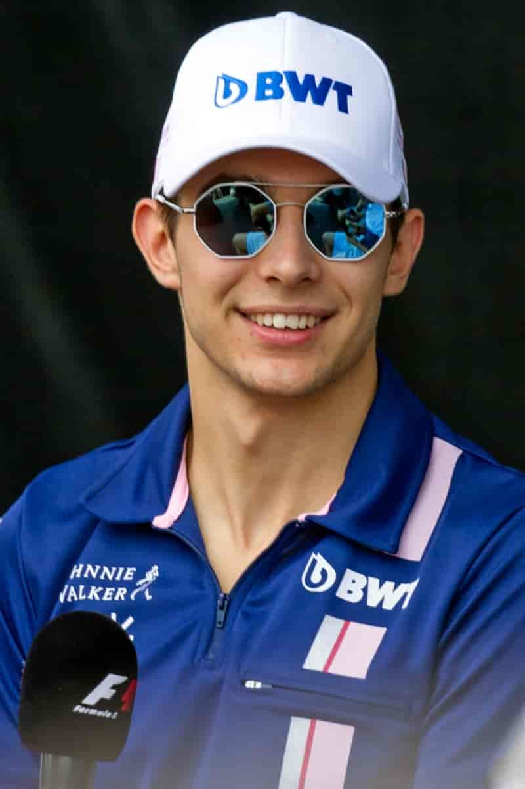
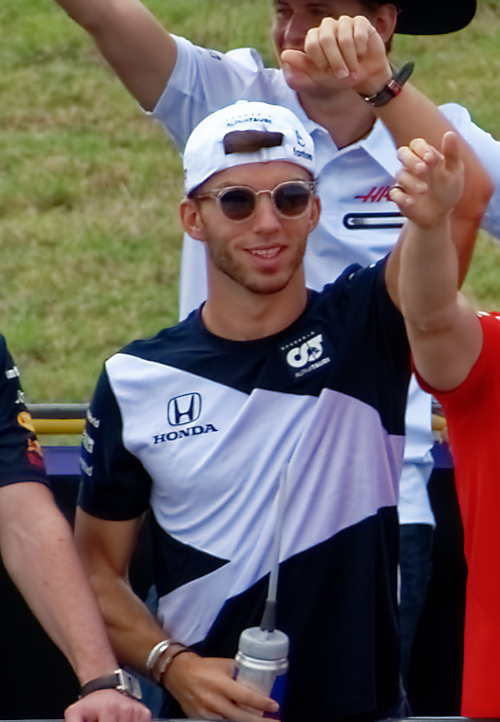

História
A primeira tentativa de envolvimento da Alpine na Fórmula 1 remonta a 1968, quando o Alpine A350 foi construído, movido por um motor Gordini V8. No entanto, após o teste inicial com Mauro Bianchi em Zandvoort, o projeto foi encerrado quando foi descoberto que o motor produzia cerca de 300 cavalos em comparação com os 400 dos motores Cosworth V8. Após o projeto ser abandonado o A350 foi destruído. Em 1975, a empresa produziu o protótipo Alpine A500 para testar um motor turbo V6 de 1,5 L para a equipe de fábrica da Renault, que iria estrear na Fórmula 1 em 1977.
Em 6 de setembro de 2020, a Renault anunciou a alteração do nome de construtor da sua equipe de Fórmula 1 para Alpine a partir da temporada de 2021, após uma reestruturação da organização interna das duas empresas com objetivo de promover a marca Alpine, que atualmente é uma subsidiária do grupo Renault.
Pilotos
-
Esteban Ocon
- Nacionalidade: França
- Idade: 26 anos
- Corridas: 119
- Vitórias: 1
- Pódios: 3
- Campeão: 0 vez
-
Pierre Gasly
- Nacionalidade: França
- Idade: 27 anos
- Corridas: 116
- Vitórias: 1
- Pódios: 3
- Campeão: 0 vez
*Dados do dia 26/06/2023